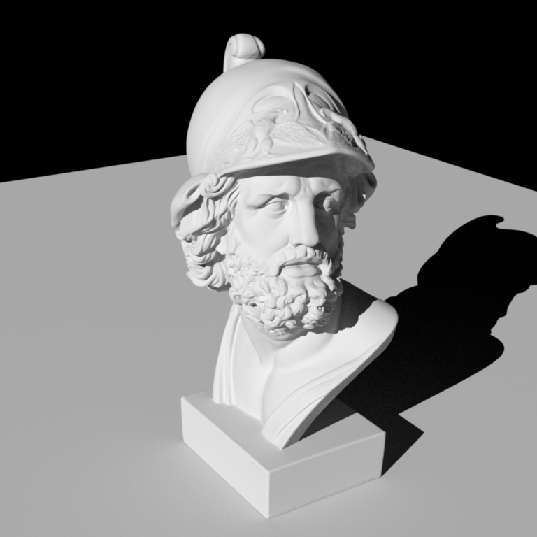
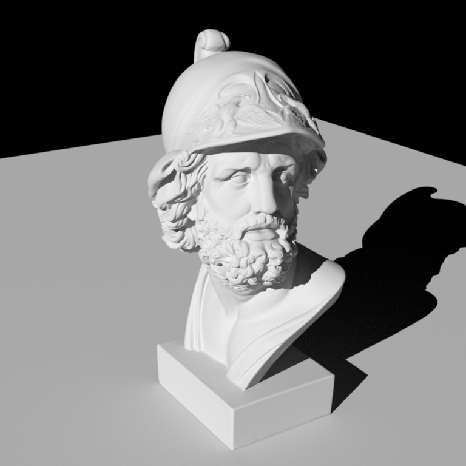

Simple Extra Emitters: Directional Light
Qi Ma
Updated Files
- include/nori/emitter.h
- src/directional.cpp
- src/path_mats.cpp
- src/path_mis.h
- src/vol_path_mis.cpp
Implementation
Directional light is a type of light source that emits light in a specific direction with uniform intensity that does not attenuate over distance.
For the implementation of the directional light, we created a new class DirectionalEmitter in the directional.cpp file.
The DirectionalEmitter class inherits from the Emitter class and includes properties for the light's intensity and direction.
The core functionality is in the sample method, which calculates the projection of the distance from the reference point to the light source projection center onto the light source direction.
The light source projection center is estimated from the world center and world radius based on the scene or be specified in the scene xml file.
It also sets up a shadow ray for visibility testing and assigns values to key fields in the EmitterQueryRecord, including the light position, direction, and normal.
The eval and pdf methods return fixed values (0 and 1, respectively), reflecting the delta nature of the light source.
Validation
We compared the directional light with the same functionality in Mitsuba. The direction of the light and its radiance were adjusted to validate the correctness of the implementation.
Comparison 1: Uniform Intensity
- Intensity: (5, 5, 5)
- Direction: (0.401387, -0.444440, -0.800851)
- Samples Per Pixel (SPP): 256
 

Comparison 2: Non-Uniform Intensity(Color)
- Intensity: (5, 4, 3)
- Direction: (0.401387, -0.444440, -0.800851)
- Samples Per Pixel (SPP): 256
Comparison 3: Change Direction
- Intensity: (5, 5, 5)
- Direction: (0.849596, -0.343943, 0.399863)
- Samples Per Pixel (SPP): 256

Conclusion
Under all test cases, our implementation of the directional light source produces results consistent with the reference images generated by Mitsuba, validating the correctness of our implementation.